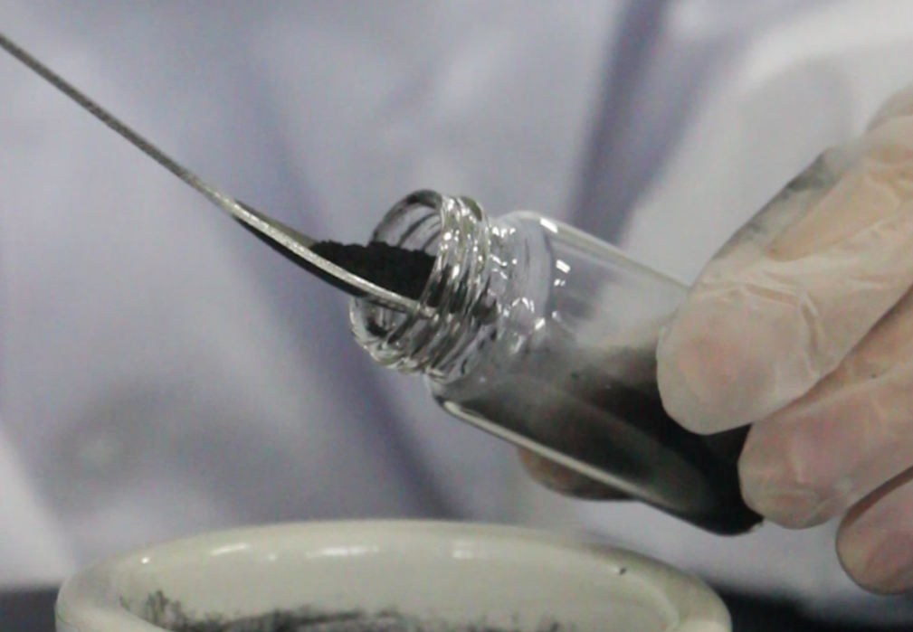
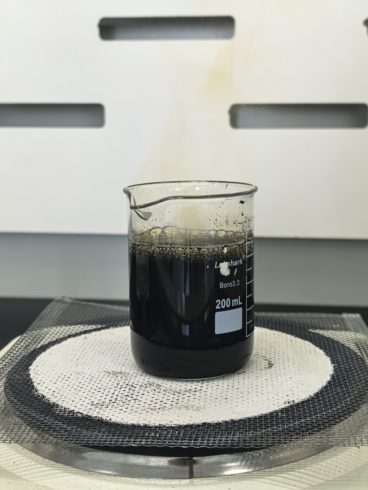

Every memorial diamond begins as something living — hair, cremated remains, or botanical material. The carbon in these sources is chemically identical to the carbon in a natural diamond: six protons, six neutrons, six electrons, arranged in a tetrahedral lattice under extreme pressure. But between the biological source and the finished gem, the carbon must survive an extraction and purification process that directly determines the diamond's final quality.
This article explains the science of carbon source purity for memorial diamonds, from the composition of biological materials to the purification protocols that separate usable carbon from contaminants. It is written for B2B partners who need to understand — and explain to their customers — why memorial diamond quality varies across suppliers.

Figure 1: Purified bio-carbon powder ready for HPHT diamond synthesis. The gray-black color indicates high carbon content with minimal residual inorganic contamination.
What Biological Carbon Sources Actually Contain
Hair — the most common memorial diamond carbon source — is approximately 45–50% carbon by dry weight. The remainder is protein (keratin), water, trace minerals, and structural elements. Cremated remains contain only 1–4% carbon by mass, with the majority being calcium phosphate and other inorganic compounds. Botanical sources like flowers or leaves vary widely, typically 40–55% carbon depending on species and drying method.
The critical point: carbon content alone does not determine diamond quality. What matters is the purity of the extracted carbon — specifically, the concentration of elements that act as dopants or defects in the diamond lattice.
Key Contaminants and Their Effects
| Element | Typical Source | Diamond Effect |
|---|---|---|
| Nitrogen (N) | Hair protein, atmosphere | Yellow coloration; can be controlled for fancy yellow or excluded for near-colorless |
| Boron (B) | Trace in biological material | Blue coloration; semiconducting properties |
| Nickel / Iron | HPHT catalyst residue | Green or gray tint; metallic inclusions reduce clarity |
| Silicon (Si) | Hair treatment products, soil | Brown coloration in CVD; vacancy complexes affect optical properties |
| Sulfur (S) | Keratin (cysteine bonds) | Structural defects; can reduce crystal perfection |
| Phosphorus (P) | Bone ash, DNA | N-type doping; generally undesirable in gem diamonds |
The Carbon Extraction Pipeline
Transforming biological material into HPHT-ready graphite is a multi-stage chemical process. Each stage removes specific classes of contaminants. Shortcutting any stage increases the risk of impurity carryover into the final diamond.
Stage 1: Sample Preparation and Ashing
Hair samples are cleaned to remove surface contaminants — oils, hair products, and environmental residues. The material is then heated in a controlled atmosphere to 600–800°C, leaving a carbon-rich ash. This step eliminates water, volatile organics, and most proteins. What remains is primarily carbon, calcium carbonate (from bone fragments in cremation ashes), and metal oxides.
Stage 2: Acid Digestion and Washing
The ash is treated with a sequence of acids — typically hydrochloric acid (HCl) followed by hydrofluoric acid (HF) — to dissolve inorganic salts and metal oxides. This is the most critical purification stage. Incomplete acid washing leaves calcium, phosphorus, and trace metals that become lattice defects during HPHT synthesis.
Our laboratory's patented carbon extraction process (ZL 2010 1 0565778.9) optimizes this acid sequence for bio-carbon sources, achieving residual inorganic content below 0.5% by mass — a threshold we have found necessary for consistent colorless-to-near-colorless diamond production.

Figure 2: Carbon purification process in progress. Acid digestion removes inorganic salts while preserving carbon structure.
Stage 3: Graphitization
Purified carbon is converted to graphite at 2,000–3,000°C under inert atmosphere (argon or nitrogen). This structural transformation is essential: HPHT diamond growth requires a graphite feedstock, not amorphous carbon. The graphitization furnace must maintain uniform temperature distribution to ensure complete conversion. Incomplete graphitization leaves amorphous carbon that does not participate in diamond growth, reducing yield.
How Purity Translates to Diamond Properties
Color Control
Diamond color is determined by trace elements incorporated into the lattice during growth. Nitrogen is the most significant color-causing impurity in HPHT memorial diamonds:
- Type Ib diamonds (single substitutional nitrogen) absorb blue light, producing strong yellow coloration. Nitrogen concentration >100 ppm produces vivid fancy yellow.
- Type Ia diamonds (aggregated nitrogen pairs) absorb in the UV/blue, producing pale yellow to near-colorless grades. Most natural diamonds are Type Ia.
- Type IIb diamonds (boron-doped) absorb red light, producing blue coloration. Boron is rare in biological sources but detectable in some botanical carbon.
For partners offering near-colorless memorial diamonds (D–F color grades), carbon purity is non-negotiable. Our laboratory targets total nitrogen content below 20 ppm in the graphite feedstock, which typically produces G–H color diamonds under standard HPHT conditions. Further nitrogen exclusion, combined with optimized growth parameters, achieves D–F grades consistently.
Clarity and Structural Integrity
Inclusions in memorial diamonds fall into two categories: metallic inclusions (from HPHT catalyst solvent) and non-metallic inclusions (from incomplete carbon purification). Metallic inclusions are visible as dark, reflective spots under magnification. Non-metallic inclusions — residual calcium phosphate, silica, or unconverted carbon — appear as cloudy or crystalline defects.
Our quality protocol targets VS clarity (Very Slightly Included) as the minimum standard for partner shipments. SI1 (Slightly Included) diamonds are accepted only at partner request for budget-tier offerings. VVS and IF grades are achievable with high-purity feedstock and optimized growth conditions.
Practical Quality Metrics for B2B Partners
Carbon Purity Target
Residual inorganics <0.5% by mass; nitrogen <20 ppm for near-colorless production.
Graphitization Yield
>95% carbon conversion to crystalline graphite; <5% amorphous residue.
Clarity Standard
VS minimum; VVS achievable with premium feedstock batches.
Color Consistency
Batch-to-batch color variation <1 GIA grade under controlled growth parameters.
Conclusion
Carbon source purity is the single most controllable variable in memorial diamond quality. Hair, ashes, and botanical materials contain the same fundamental carbon as any natural diamond — but they also carry contaminants that become permanent features of the finished gem if not removed before synthesis.
Partners evaluating memorial diamond suppliers should ask specific questions about carbon purification protocols: What is the residual inorganic content target? How is nitrogen content measured and controlled? What graphitization yield is achieved? The answers directly predict the quality consistency a supplier can deliver.
At BioGem Lab, our patented extraction technology and multi-stage purification pipeline are designed to answer those questions with measurable, repeatable results. Every batch is documented. Every diamond is traceable. And the carbon that becomes each gem has been refined to the same standards we would demand for our own.